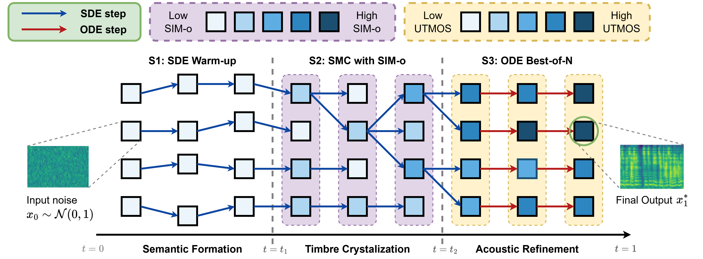

Comparing F5-TTS vs TTS2 (ours) on Expressive Speech Generation
While training-time scaling has revolutionized generative models, inference-time compute scaling remains largely unexplored in speech synthesis. In this work, we investigate methods to effectively utilize computation during inference to improve the performance of non-autoregressive Text-to-Speech (TTS) systems, specifically those based on Conditional Flow Matching (CFM). By analyzing CFM synthesis behavior, we identify distinct performance plateaus during the denoising process. To overcome these limitations, we propose TTS2 - a multi-stage, test-time compute framework that optimizes TTS quality. By combining Ordinary Differential Equation (ODE) and Stochastic Differential Equation (SDE) generation dynamics with stochastic search and specialized verifiers, our approach enables guided trajectory optimization for timbre consistency, content accuracy, and audio fidelity. To the best of our knowledge, this work is the first to formalize and study test-time scaling for non-autoregressive speech synthesis.

Compare the generated audio between F5-TTS and TTS2 (ours) using the reference prompt. Both models are evaluated at NFE = 256.
| Reference & Gen Text | Reference Audio | F5-TTS | TTS2 (ours) |
|---|---|---|---|
| Loading data... | |||